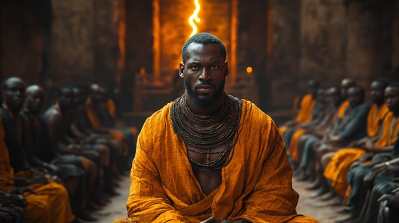

Shango’s reign, once admired, grew too powerful. In the Oyo Empire, kings and nobles began to fear not just his strength, but his control of lightning, his sorcerous power, and his growing divinity.
Whispers filled the court. Plots formed in shadows. Shango was no longer one of them — he was above, and nothing terrifies mortals more than a god walking in their midst.
The myth tells of rival rulers conspiring against him, seeking to undermine, overthrow, or entrap him. But Shango, with his supernatural instincts, heard their hearts, saw through their smiles, and prepared his fury.
This was not yet the fall… but it was the first crack in the crown.
When Kings Fear Kings
The courtiers whisper in palace halls,
Behind the drums, behind the walls.
They fear the fire that does not sleep,
A king whose wrath runs dark and deep.
Steel in hand, and gold on brow—
But every head is watching now.
When kings fear kings, the blades are drawn,
The drums go quiet before the storm.
They smile, they drink, they speak in code—
But under silk, the daggers show.
He stood too tall, he burned too bright,
They saw a god where once was knight.
And now they plot beneath the feast,
To end the rule of flame and beast.
He knows their eyes, he smells their lies—
The storm is stirring in disguise.
When kings fear kings, the blades are drawn,
The drums go quiet before the storm.
They smile, they drink, they speak in code—
But under silk, the daggers show.
No treaty holds when pride takes shape,
No bond survives a kingdom’s quake.
One throne, one crown, too many eyes—
And kings who dream that thunder dies.
They light their fires, they cast their charms—
Unknowing they’ve raised wrath in arms.
When kings fear kings, the blades are drawn,
The drums go quiet before the storm.
They smile, they drink, they speak in code—
But under silk, the daggers show.
In halls of gold, the vipers crawl,
The throne has cracks none see at all.
He hears their hearts before they breathe—
And writes their names in ash beneath.
The feast is set, the torches burn—
But thunder laughs. Now they will learn.